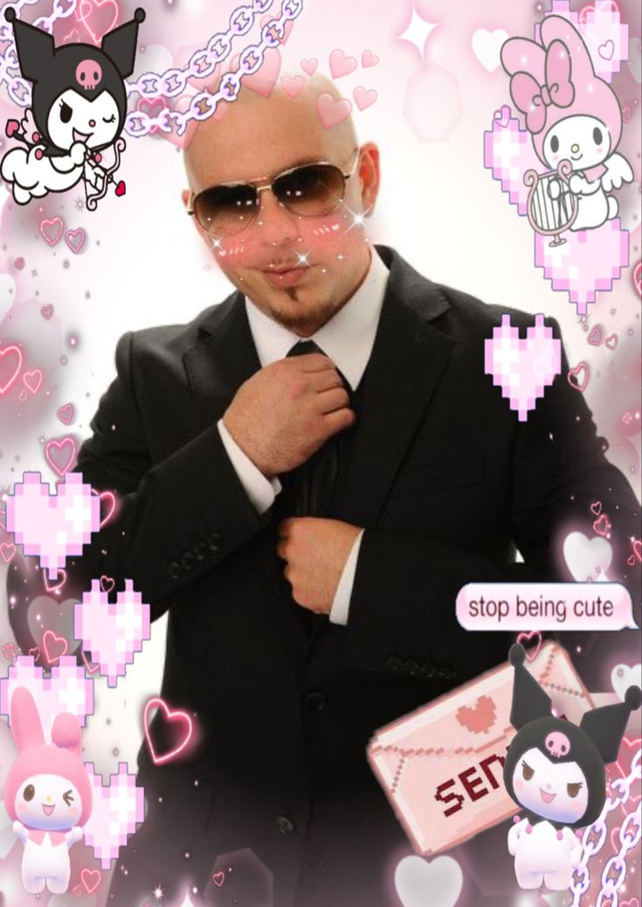
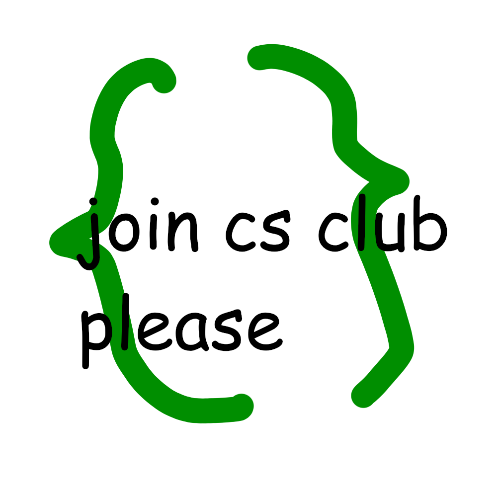
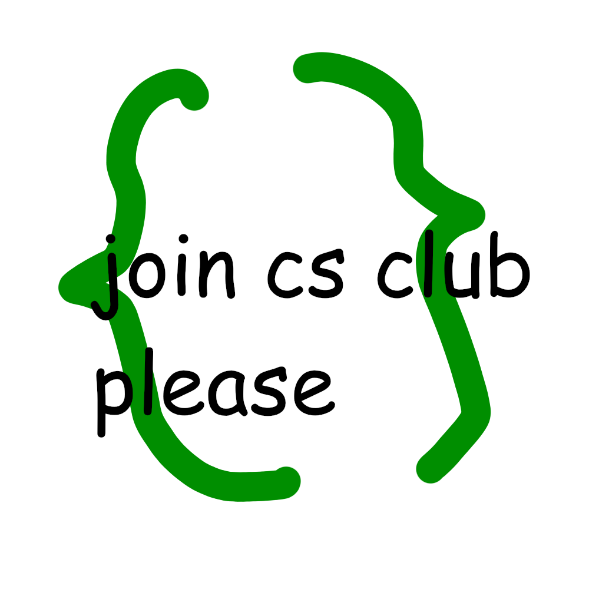

WELCOME TO MY FANPAGE!!
welcome to my website i'm the biggest catboy pitbull fan eva!!
THE BEE MOVIE
Narrator: According to all known laws of aviation, there is no way that a bee should be able to fly. Its wings are too small to get its fat little body off the ground. The bee, of course, flies anyway because bees don't care what humans think is impossible. Cut to Barry's room, where he's picking out what to wear. Barry Yellow, black. Yellow, black. Yellow, black. Yellow, black. Ooh, black and yellow! Yeah, let's shake it up a little. Barry uses honey from a dispenser to style his hair, rinse his mouth, and then applies it to his armpits. Mom (Janet Benson) (calling from downstairs:) Barry! Breakfast is ready! Barry: Coming! (phone rings) Oh, hang on a second. (adjusts his antennas into a headset) Hello? Adam Flayman (on the phone) Barry? Barry: Adam? Adam: Can you believe this is happening? Barry: I can't believe it. I'll pick you up. (hangs up, sharpens his stinger) Lookin' sharp. (flies downstairs) Mom: Barry, why don't you use the stairs? Your father paid good money for those. Barry: Sorry. I'm excited. Dad (Martin Benson): Here's the graduate. We're very proud of you, son. And a perfect report card, all B's. Mom: Very proud. (touches Barry's hair) Barry: Ma! I got a thing going here. Mom: Ah, you got some lint on your fuzz. Barry: Ow! That's me! Dad: Wave to us! We'll be in row 118,000. Barry: Bye! (flies off) Mom: Barry, I told you, stop flying in the house! (Barry drives his car to pick up his classmate. Adam's outside his house, reading the Hive Today newspaper. The front page headline reads "FRISBEE HITS HIVE ! Internet Down. Bee: 'I heard sound, then Wham-o!'") Barry: Hey, Adam. Adam: Hey, Barry. Is that fuzz gel? Barry: A little. It's a special day, finally graduating. Adam: Never thought I'd make it. Barry: Yeah, three days of grade school, three days of high school. Adam: Those were so awkward. Barry: Three days of college. I'm glad I took off one day in the middle and just hitchhiked around the hive. Adam: You did come back different. (a bee calls out as they drive past) Bee: Hi, Barry. Barry: Hey Artie, growing a mustache? Looks good. Adam: Hey, did you hear about Frankie? Barry: Yeah. Adam: You goin' to his funeral? Barry: No, I'm not goin' to his funeral. Everybody knows you sting someone, you die. You don't waste it on a squirrel. He was such a hothead. Adam: Yeah, I guess he could have just gotten out of the way. (They make various noises as the car goes up and down some hills and does a loop on the road.) A & B Woah! Oooooooh! Adam: I love this incorporating an amusement park right into our regular day. Barry: I guess that's why they say we don't need vacations. (They arrive, fly in and take their seats.) Barry: Boy, quite a bit of pomp... under the circumstances. Barry: Well, Adam, today we are men. Adam: We are! Barry: Bee-men. Adam: Amen! A & B: Hallelujah! (bumping each other) Aaaaaaaaaaaah! Announcer: Students, faculty, distinguished bees, please welcome Dean Buzzwell. Dean Buzzwell walks onto the stage and taps the microphone. Buzzwell: Welcome, New Hive City graduating class of... (presses a button to change the timer on the podium from 9:00 to 9:15) ...9:15. And that concludes our graduation ceremonies. (Students cheer, throw their caps into the air as helmets are placed on their heads.) Buzzwell: And begins your career at Honex Industries!
welcome to my website i'm the biggest catboy pitbull fan eva!!
SPONSORED CONTENT🔥🔥🔥🔥
 
